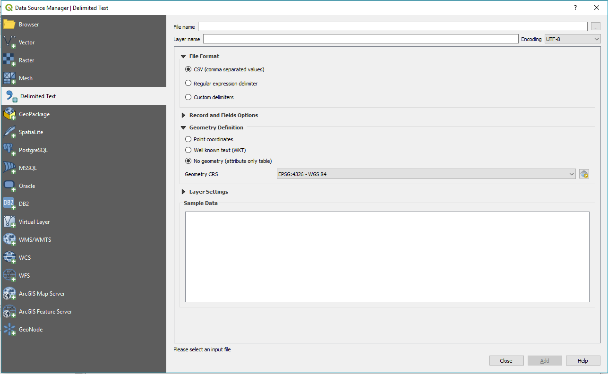
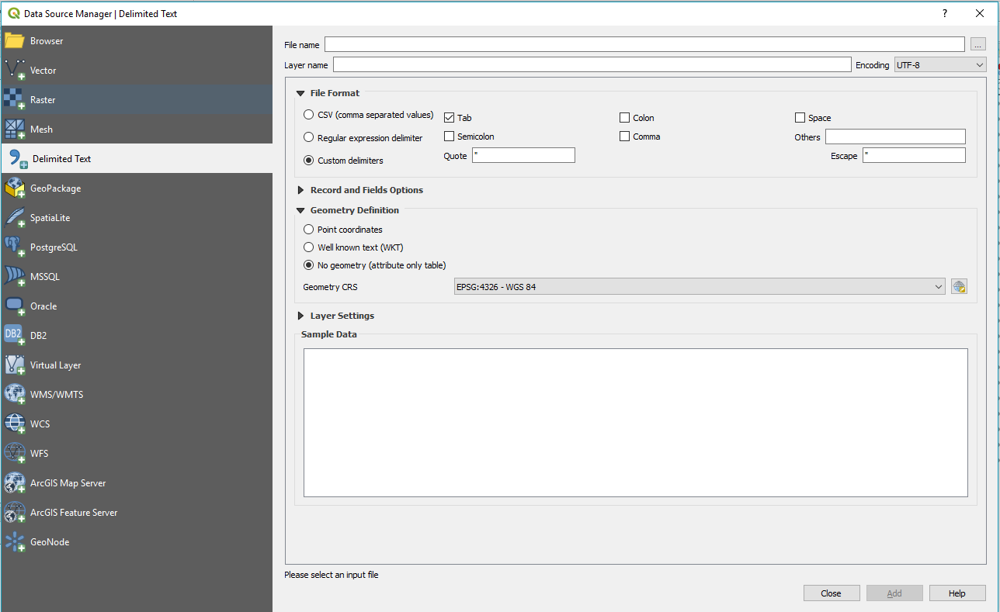
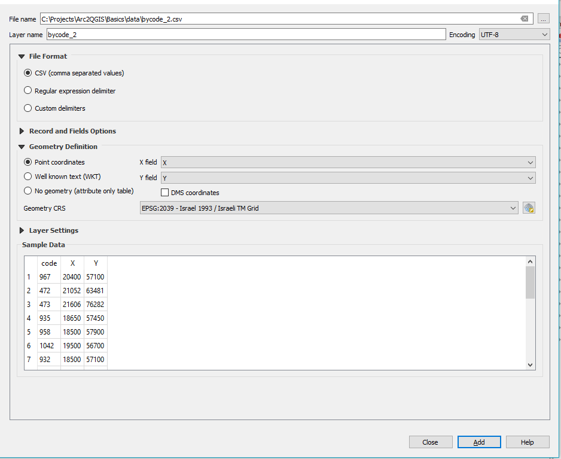
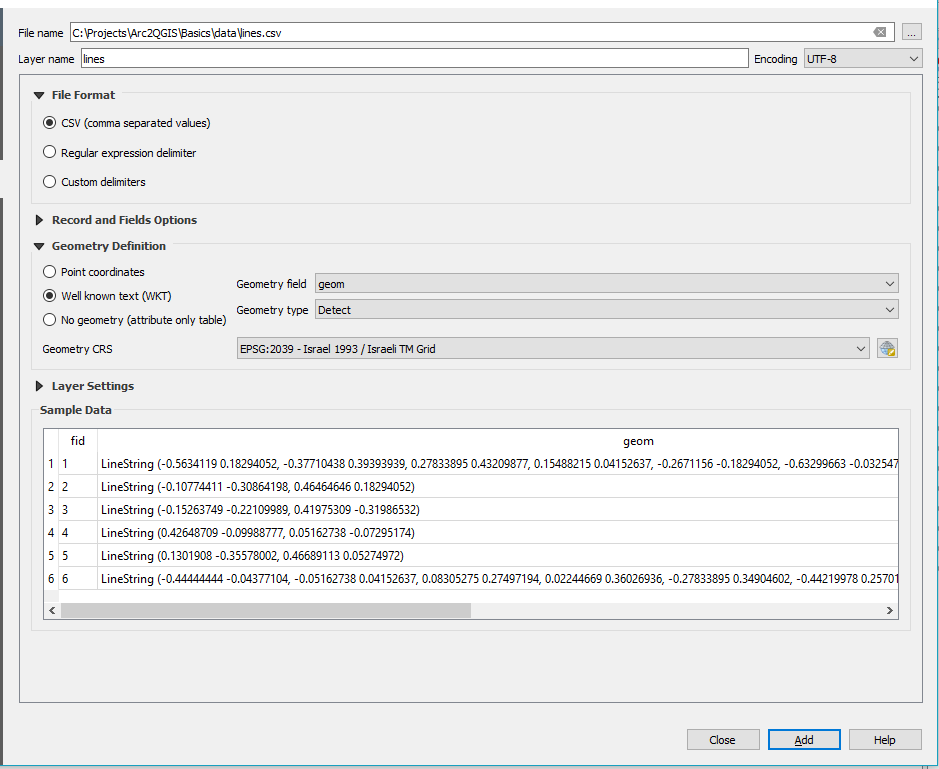
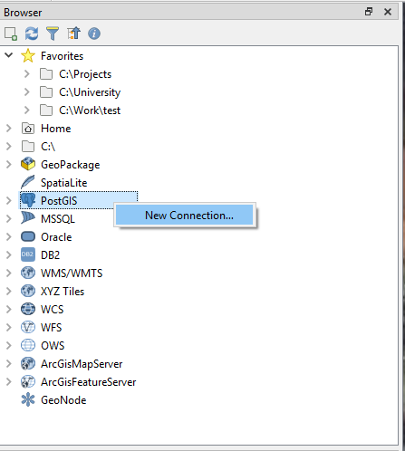
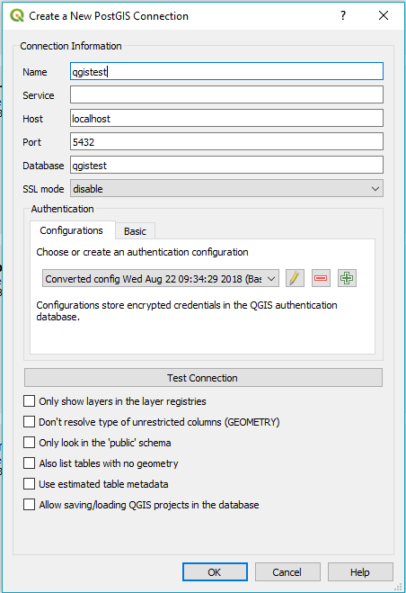
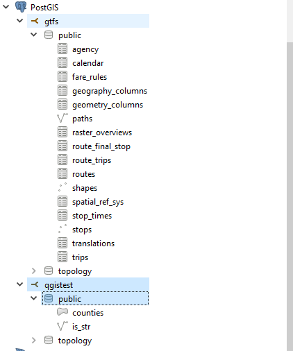

Adding Data From Different Sources
Back To Basic Concepts
Back To Homepage
Import From ESRI Shapefile (*.shp)
The easiest way to import data into our workspace is using the Data Source Manager  .
You can find it on the toolbar below the new project button, or open it using the Ctrl+L keyboard shortcut.
.
You can find it on the toolbar below the new project button, or open it using the Ctrl+L keyboard shortcut.
 Once the window opens you have a selection of data sources, to load an ESRI Shapefile or GeoJson or any other vector file type,
just select the Vector data type, the file source type and select your file.
Click Add, and you can close the window, and see your layer in the workspace.
Once the window opens you have a selection of data sources, to load an ESRI Shapefile or GeoJson or any other vector file type,
just select the Vector data type, the file source type and select your file.
Click Add, and you can close the window, and see your layer in the workspace.
 Another Option is just navigating to the folder using the browser window and dragging the layers from there
Another Option is just navigating to the folder using the browser window and dragging the layers from there
 And thats it, Simple and easy to use, and now you know how to do that in Open Source.
Go back to the top
And thats it, Simple and easy to use, and now you know how to do that in Open Source.
Go back to the top
Import From Delimited Text (*.csv/*.txt)
To import data from a delimited text file (*.csv in most cases) we first have to open the Data Source Manager .
You can find it on the toolbar below the new project button, or open it using the Ctrl+L keyboard shortcut.
Once the window opens you have a selection of data sources, select the Delimited Text option.
next you will have to choose your file, and the delimiter style it has.
The default option for delimiter is comma, though you can also choose a custom delimiter such as tabs or spaces.


If your file has X,Y or Latitude, Longitude columns QGIS will most likely identify them to load the file as a point layer.
The file in the example can be found here: bycode_2.csv. it contains the centroids of all the settlements in Israel.
The table looks something like this (but has a lot more rows):
| code |
X |
Y |
| 967 |
20400 |
57100 |
| 472 |
21052 |
63481 |

If you want to load Polygons or Lines from a Delimited file they need to be in Well Known Text Format.
For this example our line geometry is stroed in the geom column. QGIS identifies the column automatically and will detect on its own that we have Line geometry in the column.
The file in the example can be found here: lines.csv. it contains 5 randomly drawn line geometries.
The table looks something like this:
| fid |
geom |
| 2 |
LineString (-0.10774411 -0.30864198, 0.46464646 0.18294052) |
| 3 |
LineString (-0.15263749 -0.22109989, 0.41975309 -0.31986532) |

Click Add, and you can close the window, and see your layer in the workspace.
And thats it, Simple and easy to use, and now you know how to do that in Open Source.
Go back to the top
Import From ESRI FileGeoDataBase (*.gdb)
You can read data from an ESRI FileGeoDataBase with the base version of QGIS.
however, if you want to be able to edit and rewrite the layers into the database, you will need the gdal-filegdb driver.
you can install it using the OSGEO4W installer.
just select to install it like so:
 The easiest way to import data into our workspace is using the Data Source Manager .
You can find it on the toolbar below the new project button, or open it using the Ctrl+L keyboard shortcut.
Once the window opens you have a selection of data sources, to load an ESRI Shapefile or GeoJson or any other vector file type,
just select the Vector data type, the folder source type and select the .gdb folder.
The easiest way to import data into our workspace is using the Data Source Manager .
You can find it on the toolbar below the new project button, or open it using the Ctrl+L keyboard shortcut.
Once the window opens you have a selection of data sources, to load an ESRI Shapefile or GeoJson or any other vector file type,
just select the Vector data type, the folder source type and select the .gdb folder.
 Once you click the Add button, a second window will open and ask which of the FileGeoDataBase layers you want to import.
Once you click the Add button, a second window will open and ask which of the FileGeoDataBase layers you want to import.
 You can now the close the Data Source Manager window, and see your layers in the workspace.
Another Option is just navigating to the folder using the browser window and dragging the layers from there
And thats it, Simple and easy to use, and now you know how to do that in Open Source.
Go back to the top
You can now the close the Data Source Manager window, and see your layers in the workspace.
Another Option is just navigating to the folder using the browser window and dragging the layers from there
And thats it, Simple and easy to use, and now you know how to do that in Open Source.
Go back to the top
Import From a GeoPackage (*.gpkg)
Importing data from a GeoPackage can work in a number of ways, .gpkg files are recognised by QGIS as both a specific file and as the database that they are.
That means that a GeoPackage can contain many layers and not just one.
The Shapefile way
Just like loading a Shapefile you can import data from a .gpkg file simply by using the Data Source Manager and selecting the file in the Vector data type.

The FileGeoDataBase way
If the GeoPackage you are loading has more than one layer, than after clicking the add button, you will be prompted to select which layers you want to add, just like while importing data from an ESRI FileGeoDataBase.
 Go back to the top
Go back to the top
Import From a SQL Database
*Why the example uses only PostgreSQL
- Because QGIS plays very well with PostGIS, which is an extension for PostgreSQL
- Because every section takes time to write, and I have and use PostgreSQL.
- I do plan to add other SQL databases in the future, if you can document them yourself commits are welcome
To import data from an SQL database you will first have to connect to the server hosting the database.
In the browser you can create a new connection by right-clicking on the server type you want to connect to (in this example we'll use PostgreSQL's PostGIS extension).
and selecting "New Connection...".

Once the new connection window opens you need to name the new connection, usually the database's name is the best choice.
Unless your DBA changed the port of the database the port QGIS suggests should work with database of your choice, here you can see that it chose 5432 for PostgreSQL.
In this case i added the host : localhost but usually in case your database is on the same machine or netwrok this won't be necessary.
next you have to add the name of the database you want to connect to, if you are using PostgreSQL you will need to know the name, in MicroSoft SQL Server you can get a list of available databases.
If your database is not open to anonymous users you will need to set your username and password under Authentication->Basic, If you won't set them QGIS will ask you to sign in every time you will want to use the data.

Once the connection is defined you can add layers and tables from the database by dragging them to the browser or the workspace.

And thats it, Simple and easy to use, and now you know how to do that in Open Source.
Go back to the top
Import From a Web Service (WMS,WFS)
Importing data or tiles from a web service, any type of webservice (WMS, WFS, WCS etc.), can be quite easy when you have the service's URL.
all you have to do is open the Data Source Manager .
You can find it on the toolbar below the new project button, or open it using the Ctrl+L keyboard shortcut.
once the data source manager is opened you can select the type of service you want to add,
in this example we'll add NASA's Earth Observation (NEO) WMS.
Select the WMS/WMTS option and click on New:
 The new service window will open, you will notice the window differs very little between different types of services.
the new window should look like this:
The new service window will open, you will notice the window differs very little between different types of services.
the new window should look like this:
 We can just call the new service NASA or NEO
and add the URL :
We can just call the new service NASA or NEO
and add the URL :
https://neo.sci.gsfc.nasa.gov/wms/wms
if the service requires a user name or password you can define the configuration under Authentication->Basic,
if it does not you can click on OK and back in the Data Source Manager click on connect and see all the layers our new service added:
 And thats it, Simple and easy to use, and now you know how to do that in Open Source.
Go back to the top
And thats it, Simple and easy to use, and now you know how to do that in Open Source.
Go back to the top
A Note on ArcGIS Web Services
Some ArcGIS Online (AGOL) Services will only work if defined as an ArcGIS Map/Feature Server.
If your service does not work try defining it as ArcGIS Map/Feature Server instead of regular WMS/WFS.
Some Open Web Services You Can Add
You are welcome to send suggestions to be added to this list.
it's just a short list of services i've found and are worth a check.
Services marked with a star * are ArcGIS Online services.
- WMS
- NASA Earth Observations (NEO) - https://neo.sci.gsfc.nasa.gov/wms/wms
- USGS Web Map Services - https://lpdaacsvc.cr.usgs.gov/ogc/wms
- USGS 1 Meter Imagery - https://basemap.nationalmap.gov/arcgis/rest/services/USGSImageryOnly/MapServer
- *ESRI World Imagery - https://services.arcgisonline.com/ArcGIS/rest/services/World_Imagery/MapServer
- *ESRI Street Map - https://services.arcgisonline.com/arcgis/rest/services/World_Street_Map/MapServer
- *ESRI World Topo Map (the AGOL basemap) - https://services.arcgisonline.com/arcgis/rest/services/World_Topo_Map/MapServer
- *Israeli Planning Adminitration (iplan) Xplan - https://ags.iplan.gov.il/arcgis/rest/services/PlanningPublic/Xplan/MapServer
- WFS
- US Parks Boundaries - http://gstore.unm.edu/apps/rgis/datasets/7bbe8af5-029b-4adf-b06c-134f0dd57226/services/ogc/wfs?VERSION=1.0.0
- USGS Transportation - https://services.nationalmap.gov/arcgis/rest/services/WFS/structures/MapServer/
- USGS Contours - https://services.nationalmap.gov/arcgis/rest/services/WFS/Contours/MapServer/
- USGS GeoNames - https://services.nationalmap.gov/arcgis/rest/services/WFS/geonames/MapServer
- *Tel Aviv Buildings - https://gisn.tel-aviv.gov.il/arcgis/rest/services/WM/BuildingsWM/MapServer
- *Tel Aviv Urban GIS Map Layers - https://gisn.tel-aviv.gov.il/arcgis/rest/services/WM/IView2MapHebWM/MapServer
- WCS
- USGS Elevation - https://elevation.nationalmap.gov/arcgis/services/3DEPElevation/ImageServer/WCSServer
- XYZ Tiles
- Carto Positron - https://cartodb-basemaps-a.global.ssl.fastly.net/light_all/{z}/{x}/{y}.png
- ESRI Topo Map - https://server.arcgisonline.com/ArcGIS/rest/services/World_Topo_Map/MapServer/tile/{z}/{y}/{x}
- ESRI World Imagery - https://server.arcgisonline.com/ArcGIS/rest/services/World_Imagery/MapServer/tile/{z}/{y}/{x}
- Google Maps - https://mt1.google.com/vt/lyrs=r&x={x}&y={y}&z={z}
- Google Satellite - http://www.google.cn/maps/vt?lyrs=s@189&gl=cn&x={x}&y={y}&z={z}
- Google Terrain - https://mt1.google.com/vt/lyrs=t&x={x}&y={y}&z={z}
- OpenStreetMap Black & White - http://{s}.tiles.wmflabs.org/bw-mapnik/{z}/{x}/{y}.png
- Stamen Watercolor - http://c.tile.stamen.com/watercolor/{z}/{x}/{y}.jpg
- Stamen Terrain - http://a.tile.stamen.com/terrain/{z}/{x}/{y}.png
- ThunderForest Spinal Map (requires an API key) - https://tile.thunderforest.com/spinal-map/{z}/{x}/{y}.png?apikey={your API key}
- Waze World - https://worldtiles3.waze.com/tiles/{z}/{x}/{y}.png
Add New Basemaps From a Web Service (XYZ tiles)
Adding XYZ tiles to use as basemaps is a very short process.
you just have to right-click on the XYZ Tiles icon in the browser:
 select a name for the tile you want to add, and add add the URL.
the example below adds the Positron Basemap from CartoDB:
select a name for the tile you want to add, and add add the URL.
the example below adds the Positron Basemap from CartoDB:
 The name I set is "Carto Positron", and the URL for it is:
The name I set is "Carto Positron", and the URL for it is:
https://cartodb-basemaps-a.global.ssl.fastly.net/light_all/{z}/{x}/{y}.png
And thats it, Simple and easy to use, and now you know how to do that in Open Source.
for a short list of nice XYZ Tiles can be found just above this section, here.
Go back to the top
Import From a GPS output file (*.GPX)
missing this one, sorry.
Go back to the top
Import From a KML file (*.KML)
missing this one, sorry.
Go back to the top